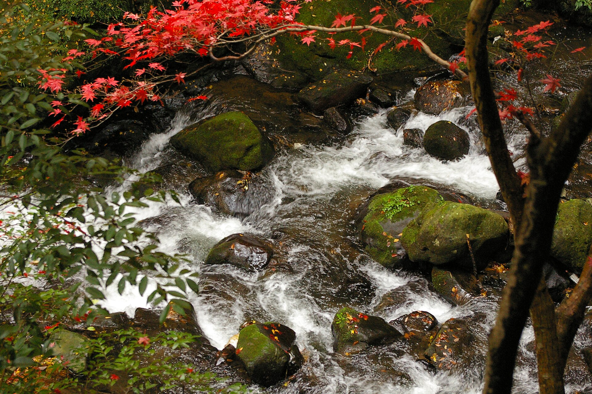
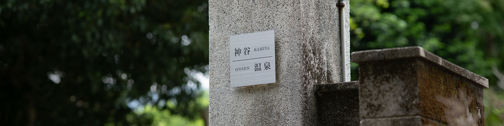
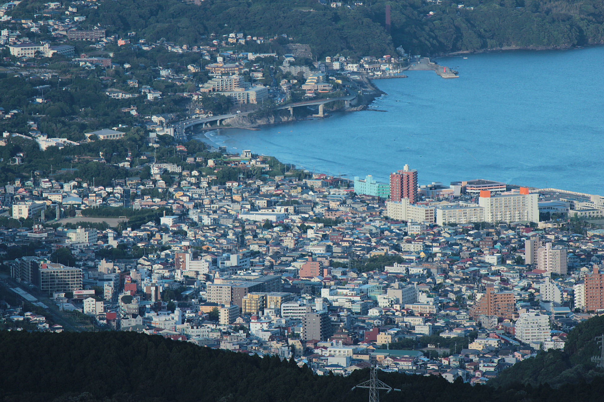
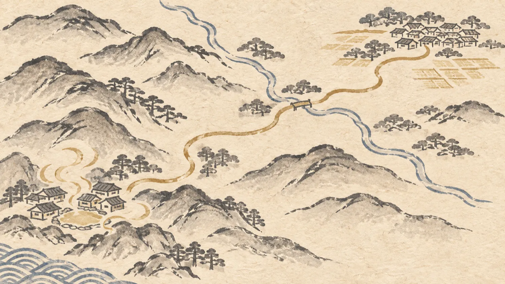

湯は、山を越えてくる。
神奈川の西のはずれ、箱根の山が相模湾に落ちていく谷に、1300年前から湧いている湯があります。
その湯を、車で山をいくつも越えて、駅前のこの建物まで。毎日のことです。

1300年、
湧いている。
足柄の土肥の河内に出づる湯の
万葉集 巻十四
世にもたのらに子ろが言はなくに
湯河原の湯は、奈良時代に編まれた万葉集にすでに詠まれています。土肥は湯河原一帯の古い呼び名。谷あいに湧いてゆらぐ湯を、恋人の揺れる心にたとえた恋の歌です。
万葉集に出てくる温泉は、道後・有馬・南紀白浜など、選りぬきの古湯だけ。東日本からは、湯河原ただ一つ。文献のうえで、関東でいちばん古い温泉といえます。
平城京に都があったころ、この谷にはもう湯が湧いていた。その同じ土地の湯が、いま湘南台の湯船に張られています。
江戸では、
東の小結。
江戸時代、温泉地を相撲の番付にならって格付けした「諸国温泉効能鑑」という刷り物がありました。湯河原温泉は、東の温泉地のベスト3にあたる三役（小結）に名を連ねています。
当時から評判だったのは、傷への効きめでした。石膏の成分を多く含むこの湯は「傷の湯」と呼ばれ、打ち身や傷、術後の回復が早いことで知られていました。江戸の史料にも、身の痛みにはとくによく効くと記されています。
土肥の豪族・土肥氏は、源頼朝の挙兵を助けた一族でもあります。湯と人の行き来が、ずいぶん古くからあった谷です。


湯河原という町。
箱根の山が相模湾に落ちていく、その切れ目に湯河原はあります。藤木川と千歳川が刻んだ谷に宿が並び、源泉が集まる一帯には湯けむりの上がる温泉櫓が立っています。
湧出量が多く、最高 80度以上の高温の源泉に恵まれた土地です。その奥、いちばん山側が奥湯河原。らくの湯は、ここにある三本の自家源泉から来ています。
源泉の所有者は湯河原温泉地所株式会社（神谷温泉）。運搬は配送を専門とする会社が行っています。


汲んで、運んで、注ぐ。
谷から駅前まで、湯が通ってくる道のりです。紙をさわると、その土地の写真に変わります。

運ぶところを、撮ってきました。
源泉から、山を越えて、駅前まで。55秒。音楽が流れます。
古くから、こう呼ばれてきました。
万葉集に詠まれたころから、人が入ってきた湯です。この土地では、三つの呼ばれ方をしてきました。
湯冷めしにくい湯
湯から上がったあと、体が冷えにくいと言われてきました。
寝る前に入る日に向いています。
「傷の湯」
打ち身や傷によいとされ、古くから「傷の湯」と呼ばれてきました。
江戸時代の温泉番付では、東の小結。
「美肌の湯」
湯あがりに肌がしっとりするとされ、「美肌の湯」とも呼ばれます。
湯あがりに。
源泉は三本。
| 源泉 | 泉質 | pH | 成分総計 |
|---|---|---|---|
| 第1号 | ナトリウム - 塩化物泉（弱アルカリ性・低張性高温泉） | 8.2 | 2,632 mg/kg |
| 第2号 | ナトリウム・カルシウム - 塩化物・硫酸塩泉（同上） | 8.2 | 2,038 mg/kg |
| 第3号 | ナトリウム・カルシウム - 塩化物・硫酸塩泉（同上） | 8.2 | 1,338 mg/kg |
数値は源泉の所有者である湯河原温泉地所株式会社（神谷温泉）の公表値です。当店の浴槽の成分分析書は館内に掲示します。
効能
切り傷、打撲、外傷、神経痛、腰痛、婦人病に効果があるといわれています。
適応症
神経痛、筋肉痛、関節痛、五十肩、運動麻痺、関節のこわばり、うちみ、くじき、慢性消化器病、痔疾、冷え性、病後回復期、疲労回復、健康増進、切り傷、やけど、慢性皮膚病、虚弱体質、慢性婦人病など。
効能は湯の一般的な性質によるもので、効果をお約束するものではありません。